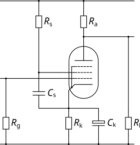

| Circuit Parameter | Operating Point | ||
|---|---|---|---|
| Field 1 | Value 1 | ||
| Field 2 | Value 2 | ||
| Field 3 | Value 3 | ||
| Field 4 | Value 4 | ||
| Field 5 | Value 5 | ||
| Field 6 | Value 6 | ||
| Field 7 | Value 7 | ||
| Field 8 | Value 8 | ||
The Pentode Common Cathode Amplifier is similar in principle to the triode amplifier but the pentode version has the advantage of offering both higher gain and higher output swing. Because the anode is no longer a controlling element (its only job is to sit there collecting the electrons passing through the screen), the anode curves more closely resemble those of a transistor and the increase in available swing is easily seen by the fact that the anode curves cover far more of the anode load line than is the case for triodes.
In this circuit, the screen voltage (which controls the gain of the pentode) is set by the screen resistor and, at the bias point, means that the screen is at a voltage below the supply voltage determined by the quiescent screen current and the screen resistor. If the screen resistor is not bypassed then it will also introduce a degree of local negative feedback as the screen voltage will vary with signal. In some circuits, the screen is decoupled to ground but it should be decoupled to the cathode as it is the cathode to screen voltage that determines the anode current.
In guitar amplifiers, a pentode gain stage can offer a couple of useful characteristics: 1) the markedly different anode curves (compared to a triode) offer a slightly different way of colouring the sound due to natural distortion, and 2) a suitable choice of screen capacitor leads to a level of natural compression determined by the time constant of the screen resistor and capacitor. For example, an EF86 with a screen resistor of 300k and a screen bypass capacitor of 47nF yields a time constant of 14mS, which is likely to suit most guitar players.